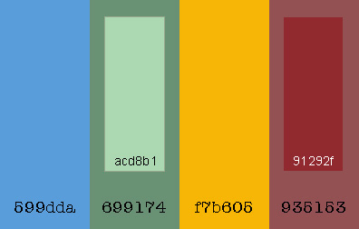

Color Scheme
The way I will use these colors is probably as you see here in this website document plan. I find it is best to play around with the colors on my website and decide by seeing which color is best to use where. I usually choose my colors, make the website, switch the colors around, sometimes change some of the colors and then it's done!